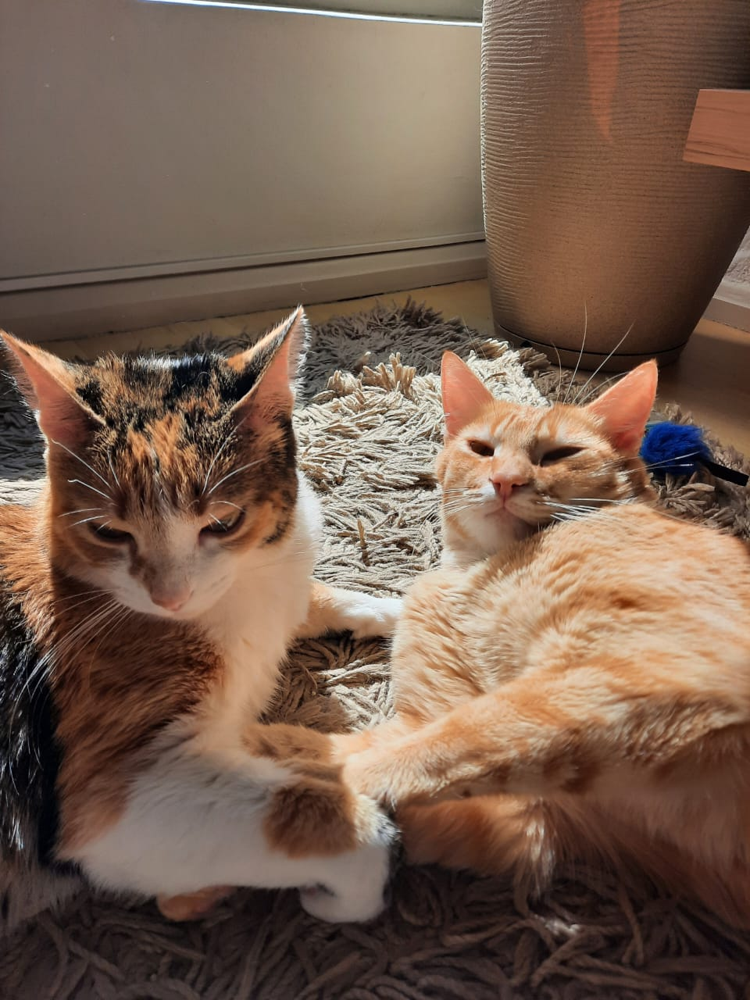

Autou como advogada há 8 anos. Há algum tempo não me encaixo mais no mundo corporativo tradicional, razão pela qual atualmente estou me aventurando no mundo da programação visando minha transição de carreira.
No momento estou buscando o conhecimento através do programa maispraTi e cursos na Alura. A partir do ano que vem pretendo retornar ao ambiente universitário para galgar mais conhecimento na área da tecnologia e buscar oportunidades de estágio para iniciar na carreira.
Estou construíndo meu portifólio no Git Hub.
Meus passatempos favoritos incluem assistir séries/filmes, jogar videogame, colecionar álbuns da copa do mundo e amassar muito meus gatitos.
E por fim, apresento os gatitos: Panqueca e Quindim!
